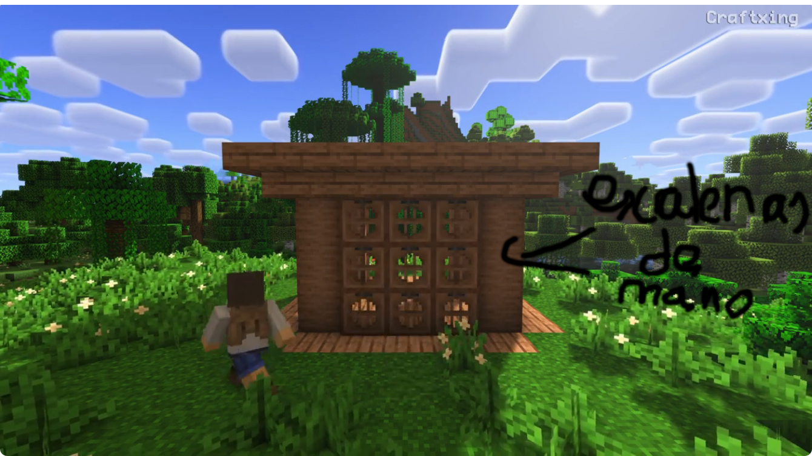
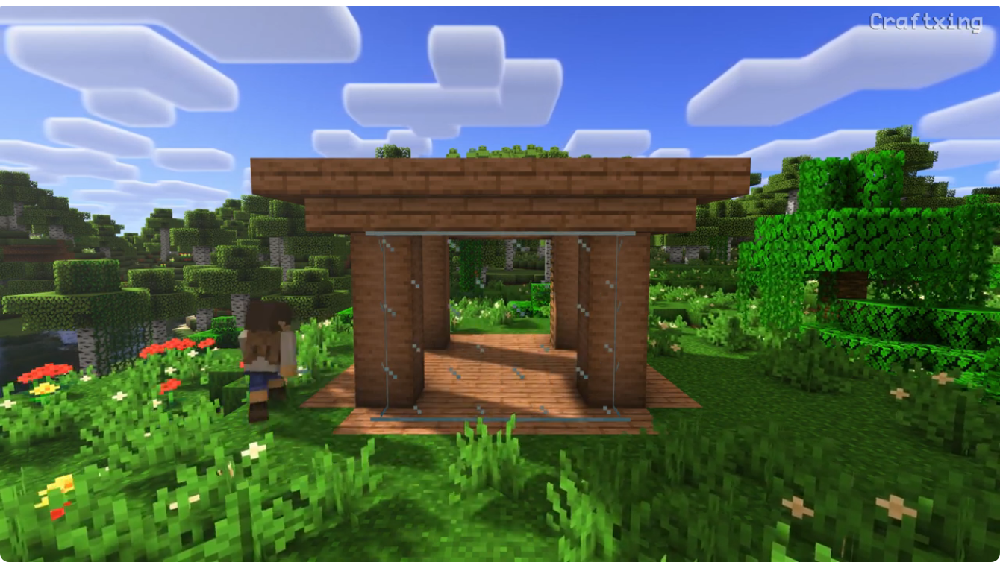

Primer paso:Suelo y columnas primera planta

En primer lugar vamos a poner 4 troncos de jungla hacia arriba en cada una de estas esquinas blancas vistas en la imagen.
Despúes vamos a cavar todo el suelo perteneciente a la imagen rellanado con bloques de madera de jungla más rellenar por fuera una linea de cuatro bloques de madera de jungla a cada lado.

Deberia estar quedando así:
Segundo paso:Techo primera planta
Ahora en el medio bloque de arriba del tronco de jungla más alto vamos a rellenar todo con losas de jungla.

Queda así
Ahora debemos de por fuera en lo alto del tronco de jungla rellenar el borde con escaleras de jungla hacia abajo.

Así a cada lado
Tercer paso:Muros y detalles primera planta
Primero ponemos 4 escaleras de mano en el interior de un tronco de jungla así rompiendo el bloque de justo arriba.

Despues rellenamos el muro con trampilla con punto de referencia justo a la izquierda del tronco con las escaleras de mano así:

A la izquierda de ese muro ponemos otro muro pero de paneles de cristal.

Hacemos lo mismo justo enfrente.

El muro q nos queda es la puerta se hace con troncos de jungla,escaleras de jungla y puerta de jungla